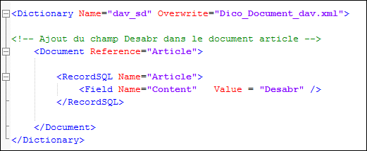
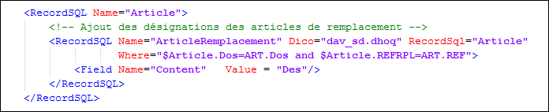

La section <RecordSQL> peut être surchargée. Cela permet de :
Modifier les attributs de fields existants
Ajouter des fields
Ajouter des RecordSQL dans l'arborescence des RecordSQL d'un document.
Dans la section <RecordSQL> d'un document chaque RecordSQL de l'arborescence est identifié par un attribut Name unique.
Dans le dictionnaire de surcharge, on utilisera ce nom unique pour indiquer à quel RecordSQL de l'arborescence d'origine s'appliquent les modifications.
Exemple d'ajout d'un field dans un RecordSQL existant

Exemple d'ajout d'un RecordSQL
